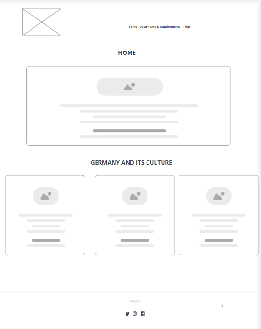
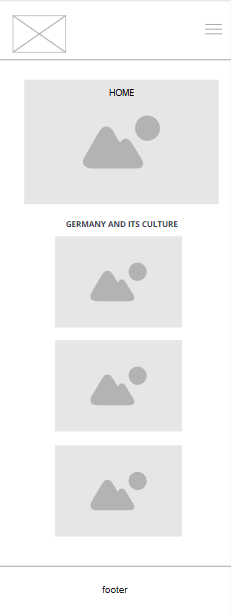

Site Name:
Travel Preparation Guide – Germany This name of my website project represents preparation guide for people planning a trip to Germany..
Site Purpose:
The website will provide essential information for travelers, including an introduction to the country, required travel documents such as visas and insurance, and practical packing and travel tips.
Scenarios:
- I like Germany as a place to live, where do I need to start? What documents do I need? - What tourist attractions can I visit?
Color Scheme:
--Primary Color: #B11226 --Secundary Color: #F2F2F2 --accent1-color: #FFFFFF; --accent2-color: #333333;
Typography:
--heading-font: "Open Sans", sans-serif; The website uses Open Sans as the primary and only font. This font is applied to headings, body text, navigation, and buttons. Open Sans was chosen for its high readability, clean appearance, and versatility across different screen sizes, making it suitable for both headings and body content.
Wireframe:
Wireframe Desktop

Wireframe Mobil
